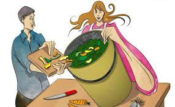
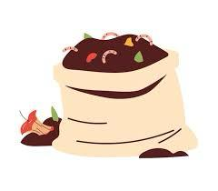
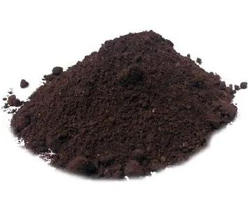
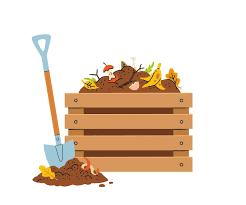
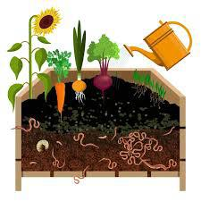

Esta es una pagina web que te muestra un producto de composta , para que te sirve y beneficios ,
esta producto es esencial para nuestros aires, ya que esta limpio de químicos y solo son residuos ,
nuestro producto es esencial para que ya no haya contaminación en los aires ,ay evitemos que haya enfermedades
ya que todos los productos llevan muchos químicos , nuestro producto es para evitar haya mas enfermedades .
En nuestra composta usamos materiales reciclables que son esenciales para el medio ambiente
no deben de preocuparse de que si usamos algún químico ,
ya que nuestra composta es de puro residuo orgánico
así si que la pueden sin ninguna preocupación
de que tus plantas arboles y cultivos se puedan quemar o dañar por el producto
entre todos cuidemos el medio ambiente y la podemos usar como abono natural para tener un suelo sano
por que entre mas plantas y arboles significa mas vida.
Beneficios
Beneficios
Descripción
foto
Bajo costo La composta usa materiales que ya tienes en casa
Para hacer composta no necesitas comprar insumos caros.
Se utilizan restos orgánicos como cáscaras de frutas y verduras, hojas secas, restos de café, etc.
Son desechos que normalmente irían a la basura, así que no representan un gasto adicional.
No necesitas comprar maquinaria ni herramientas especiales
Puedes hacerla en un rincón del patio, en una cubeta, un cajón o una compostera sencilla.
No requiere equipo costoso como fertilizantes químicos o maquinaria agrícola.
Reduce el gasto en fertilizantes
Una vez lista, la composta sirve como abono natural, así que ya no necesitas comprar fertilizantes industriales para tus plantas o jardín..

Fomenta la biodiversidadAumenta la vida en el suelo
La composta es rica en nutrientes y materia orgánica
Cuando la aplicas al suelo, atrae lombrices, insectos, hongos y microorganismos (como bacterias y actinobacterias)
Estos organismos mejoran la estructura del suelo y crean un ecosistema más vivo y diverso.
Mejora el hábitat de pequeños animales
Al enriquecer el suelo, se crean mejores condiciones para bichitos, escarabajos, arañas y otros pequeños animales que son importantes para la cadena alimenticia.
Ayuda a que crezcan más plantas
Un suelo sano con composta permite que crezcan distintas plantas
Más plantas significan más flores, lo que atrae a abejas, mariposas y otros polinizadores, aumentando la biodiversidad..

No utiliza fertilizantes quimicosLa composta ya es un fertilizante natural
La composta contiene todos los nutrientes que las plantas necesitan (nitrógeno, fósforo, potasio, micronutrientes)
Por eso, no es necesario añadir químicos: ya cumple la función de enriquecer el suelo
Los fertilizantes químicos alteran el equilibrio natural
La composta fomenta la vida microbiana y de lombrices
Si agregas fertilizantes químicos, puedes matar microorganismos y hongos benéficos, afectando el proceso natural de descomposición.
Se busca un proceso 100% natural y ecológico
La idea de la composta es reciclar residuos orgánicos y crear un abono libre de químicos
Así, se evita contaminar el suelo y se protege el ambiente.

libre de contaminaciónLa composta se hace solo con restos orgánicos naturales (cáscaras, hojas, residuos de jardín, etc.)
No se le agregan pesticidas, fertilizantes químicos ni aditivos sintético No contamina el agua ni el suelo
Los fertilizantes y pesticidas químicos pueden filtrarse al agua subterránea y contaminar ríos y lagos
La composta, al ser natural, no libera sustancias tóxicas, y sus nutrientes se absorben de forma segura por el suelo y las plantas.
Ayuda a la vida del suelo
Al usar composta, se mantiene y fomenta la biodiversidad (microorganismos, lombrices, insectos benéficos)
En cambio, productos químicos pueden dañar o matar esa vida microbiana.

Mejora la saludMejora la salud del suelo y de las plantas
La composta hace que el suelo sea más fértil y equilibrado, lleno de nutrientes naturales
Esto hace que las plantas crezcan más sanas y fuertes, sin necesidad de químicos
Alimentos más sanos
Si usas composta en huertos o jardines, tus frutas y verduras no contienen residuos de fertilizantes ni pesticidas químicos
Comer alimentos más limpios y naturales es mejor para nuestra salud
Menos exposición a químicos tóxicos
Al reducir el uso de fertilizantes y pesticidas industriales, disminuye el riesgo de intoxicaciones o alergias causadas por esos productos Ambiente más limpio, aire más sano
Al no usar químicos, se evita contaminar el suelo y el agua
Además, la composta reduce la cantidad de basura, lo que significa menos emisiones de gases y menos malos olores en el ambiente.
